Owner’s Manual ›
Rev F · For use with HX One Firmware 3.83
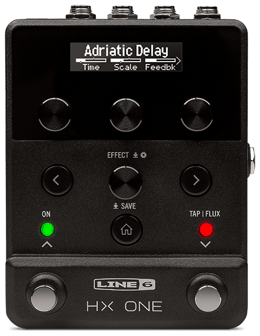
Welcome
“Another Manual?”
Yes, we get it—not everyone enjoys reading through Owner’s Manuals! The Line 6® HX® One is designed to be simple enough that you could probably just plug it in, start playing, and immediately get some amazingly gratifying tones. But, as with all Line 6 Helix® and HX family devices, there is more that you’ll want to know to get the most out of your new device, which is where this manual comes in. We’ve also created some super handy online videos to show you just what HX One is all about. Go here: https://line6.com/hx-one/.
“Alrighty then...”
Thank you for purchasing the Line 6 HX One effects device, which boasts quite possibly the most extensive assortment of world-class effects models ever crammed into such a diminutive stompbox! We hope it helps drive your search for tonal bliss and spawns years of creativity, both on stage and in the studio.
Although you’re likely anxious to rip open the box and plug in, wait! At the very least, check out the HX One Cheat Sheet that came in the box and keep it handy. Then read the “Quick Start” chapter of this manual and we’ll have you up and shredding in no time. Also be sure to visit line6.com/videos, where we’re always adding new video tutorials covering the latest Line 6 gear!
Common Terminology
While reading this manual, you may encounter several unfamiliar terms. It’s important to know what they mean. Be careful—we might toss a pop quiz your way.
- Model
- Each effect that can be loaded is referred to as a model. HX One includes 250+ effects models from Line 6 HX Effects™, DL4™, DM4™, MM4™, FM4™, M13®, M9®, and M5® multi-effects devices.
- Preset
- A preset consists of the currently loaded model and its title, parameter settings, footswitch & controller assignments.
- Controller
- Controllers are used for remotely adjusting various parameters in real-time—HX One allows you to assign a controller to practically any effect parameter. For example, an expression pedal can control a wah or pitch shift, the FLUX Mode footswitch can “ramp” a chorus or vibe rate between two speed values, or the mod wheel on your MIDI keyboard can control delay feedback or reverb depth.
- Send/Return
- The Send and Return jacks are used to insert your other favorite stompboxes anywhere in the signal flow or to connect to your guitar amp via “4-Cable Method”. This provides tons of flexibility for using HX One with other gear, and to virtually position it anywhere in your signal chain.
Installing Adhesive Rubber Feet
To ensure best adhesion, please follow these steps for applying the included adhesive rubber feet to the bottom of your HX One device.
- Clean the chassis surface where feet are to be applied with a mild solvent, such as isopropyl alcohol.
- Apply when chassis and environment are at or near room temperature (approximately 70° F / 21°C).
- Peel from backing and press and hold rubber feet firmly to the chassis for several seconds to apply. Avoid disturbing the rubber feet for up to 72 hours to allow for adhesive to fully bond.
Updating HX One Firmware
It is highly recommended to routinely check for and install any available firmware update for your HX One device using the free Line 6 Central application, available at line6.com/software. With an active Internet connection, power up and connect HX One to your computer’s USB port, disconnect any MIDI cables from HX One’s MIDI IN and OUT/THRU ports, then launch Line 6 Central and follow the steps on your screen.
Manage, Backup, & Restore HX One
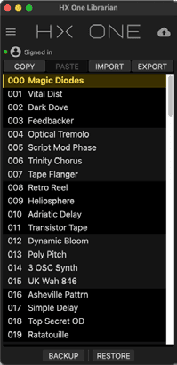
The free Line 6 HX One Librarian app (macOS and Windows), available at line6.com/software, is an indispensable tool allowing you to easily re-order and manage all your HX One presets, as well as backup all your device’s presets, settings, and customized user model defaults. You can store a virtually unlimited number of backups to your computer and restore any backup to your device in minutes.
Top Panel
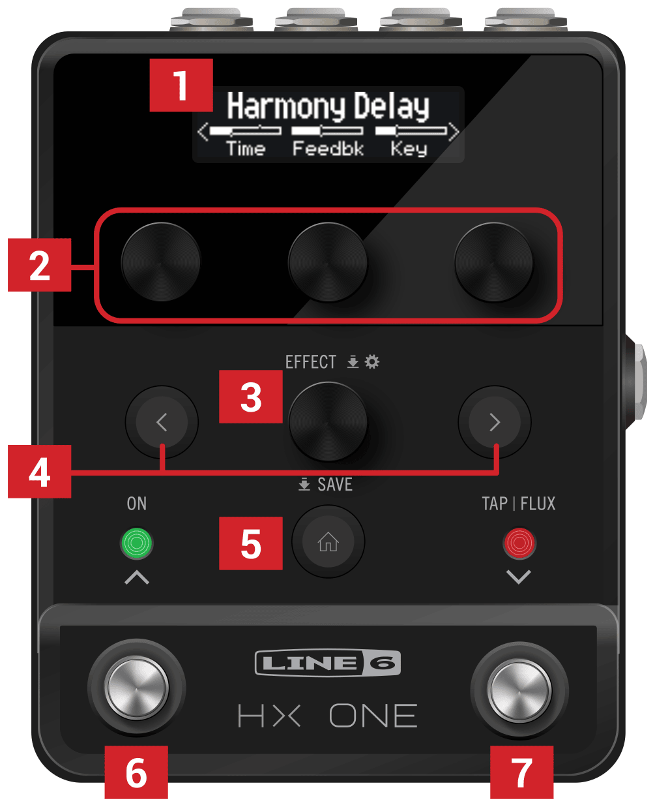
- Display Press ⌂ to display the current effect and its parameters (shown above). This OLED display also shows alternate Views for other tasks, such as loading or saving presets, configuring controller & device settings, and more, as covered in the following chapters.
- Knobs 1-3 Turn one of the three knobs on the top row to adjust the three respective parameters currently shown in the display; press the knob to reset the parameter to its default value. Use the ‹ or › PAGE button to access additional parameter pages.
SHORTCUT: For most time-based parameters such as Delay Time or Modulation Speed, press the knob to toggle the value between ms or Hz and note divisions (1/4-note, dotted 1/8-note, etc.).
SHORTCUT: Expression, FLUX, or Footswitch controllers can be assigned to most effect parameters. Press and hold a parameter’s knob to enable it for Expression/FLUX control—see page 22.
- EFFECT Turn this knob to scroll through the complete list of effects and load the desired model. To find a model more easily, push the knob and hold while turning to choose a category from the Effects Carousel, then release the knob to select the category—see “Choosing an Effect”.
Push and release the knob to display the current category’s Effects list.
Press and hold the knob to enter the Settings View to edit the Input Gate, Bypass Type, and other Global and Per Preset settings—see “Settings View”.
- ‹ PAGE › If the selected model has more than one page of parameters, arrows appear at the left and/or right of the Display. Press ‹ or › PAGE buttons to view more parameters. In the Effect Categories’ lists, press › to open the category folder. In the Effects List press ‹ to go back to the Categories list.
Press both ‹ and › PAGE buttons together to access the Reset Factory Defaults and User Defaults options—see “Restoring Global Settings” and “Saving a Model’s User Default Settings”.
- ⌂ HOME | SAVE If you ever get lost, press this button to return the Display to the Home View.
Press and hold the button to enter the Preset Save View—see “Saving/Naming a Preset”.
- ON Press to toggle the current effect enabled or bypassed. The ON LED above lights when enabled. HX One is configured for DSP Buffered Bypass as the default, but you can alternatively choose True Bypass—see “Settings View”.
- TAP | FLUX Press TAP two or more times to set the BPM (beats per minute) of any tempo-based effects such as delay or modulation. Press TAP once to restart any LFO-based modulation effects—see “Setting a TAP Tempo”.
TIP: HX One can also sync to MIDI Clock tempo. When synced, the TAP LED flashes blue—see “Using MIDI Clock for Tempo Sync”.
Press & hold to engage FLUX Mode, where your Expression/FLUX-assigned effect parameters “ramp” up or down to your custom-specified values—see “Expression Pedal, FLUX Mode, & Footswitch Setup”.
TIP: Press and hold both the ON and TAP | FLUX switches for 2 seconds to use the built-in Tuner—see “Using the Tuner”.
Preset Mode Switching
Press and release both the ON and TAP | FLUX switches to enter Preset Mode. You’ll see the Preset List shown on the Display. Press and release the ON or TAP | FLUX switch individually to load the next/previous preset. See “Preset Mode”.
Rear Panel
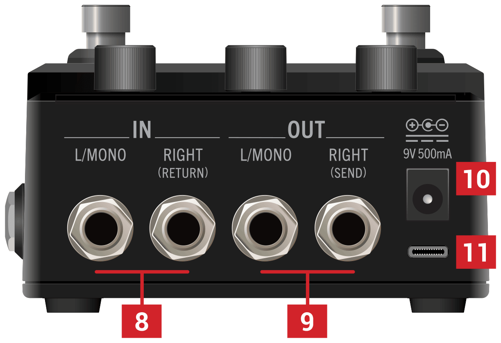
NOTE: By default, HX One is configured for stereo or mono operation—connecting cables to both IN or OUT jacks provides stereo, or connecting to only the IN or OUT–L/MONO jacks provides mono. Alternatively, you can set the “Settings View” - I/O Config option to “Insert,” allowing the OUT–RIGHT and IN–RIGHT jacks to function as the SEND and RETURN of a mono effects loop. Also, see the “Setup Examples”.
- INPUT L/MONO, RIGHT Use unbalanced 1/4" TS cables to connect your guitar, bass guitar, or mono pedals to the L/MONO input. Connect stereo pedals, keyboards, synths, or modelers to both the L/MONO and RIGHT inputs.
- OUTPUT L/MONO, RIGHT Use unbalanced 1/4" TS cables to connect to your guitar amp or other pedals. When connecting to a mono pedal or single amp, connect only the L/MONO 1/4" jack.
- DC In Use the included Line 6 power adapter (9VDC, center-negative, 2.1mm center diameter, 500mA) and connect here to power HX One. The provided adapter serves as the disconnect device.
- USB-C® Connect to your macOS or Windows computer to use the free Line 6 HX One Librarian application for preset & settings backup/restore, and the Line 6 Central application for updating to the latest firmware (available from line6.com/software). HX One also offers USB MIDI control from your MIDI/DAW applications. The maximum recommended length for the USB cable is two meters (cable not included).
Left Panel
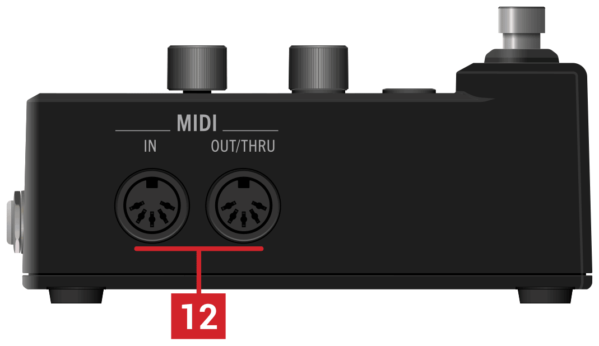
- MIDI IN, OUT/THRU Connect the HX One hardware to your MIDI gear to receive program changes, continuous controllers, and MIDI Clock. MIDI communication is also available via USB. See “MIDI”.
Right Panel
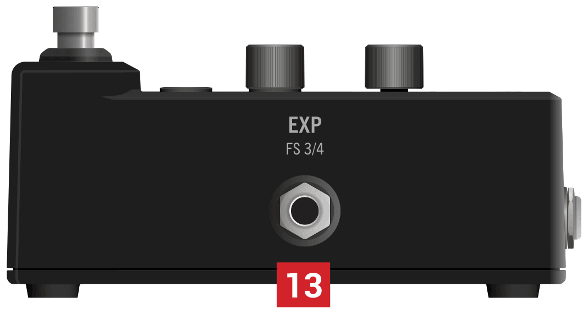
- EXP PEDAL | FS 3/4 Connect an expression pedal (TS cable) or dual footswitch (TRS cable) for additional control over practically any effect parameters. See “Connecting an Expression Pedal and Footswitches”.
Quick Start
Setup Examples
In Front of Your Amp
The simplest way to use HX One is just like a traditional effect pedal, straight into the front of an amplifier. HX One can optionally feed a second amp for stereo operation.
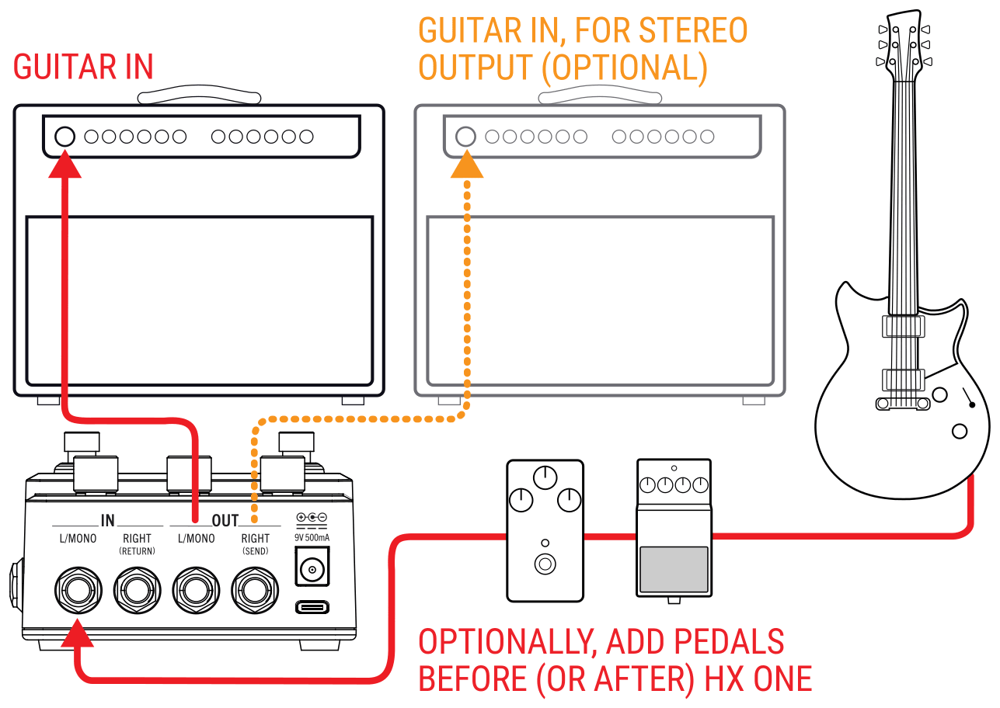
Press and hold the EFFECT knob to enter the Settings View.
Press › to go to page 2 and turn knob 2 to set the I/O Config option to “Stereo” (the factory default setting), which allows you to use HX One in mono or stereo.
Connect your guitar or instrument into HX One’s IN – L/MONO jack.
Optionally, you can connect pedals between your guitar and HX One.
Connect HX One’s OUT - L/MONO jack into your amp’s input.
Note that when connecting only HX One’s OUT - L/MONO jack, your output is folded to mono. You can connect from the OUT - RIGHT jack to a second amplifier for stereo.
Optionally, you can also connect pedals between HX One and your amplifier(s).
In Your Amp’s Effects Loop
Some guitarists prefer to place time-based effects such as delay, and reverb (sometimes called “post” effects) within their amp’s effects loop. If your amp has an effects loop, HX One can accommodate these setups with ease—with or without additional pedals (such as overdrive, fuzz, compression, etc.) before the amp.
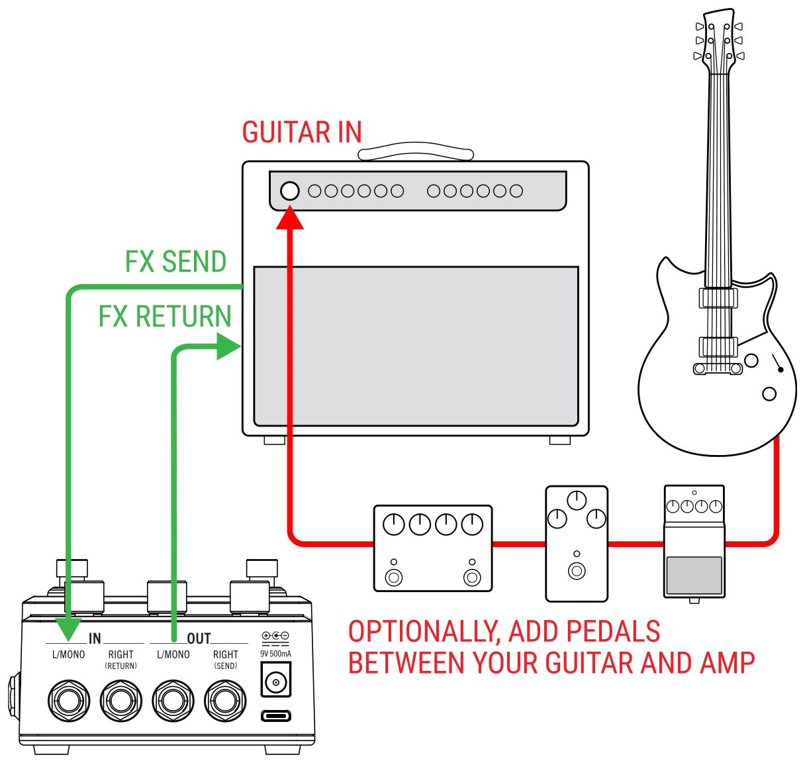
Press and hold the EFFECT knob to enter the Settings View.
Press › to go to page 2 and turn knob 2 to set the I/O Config option to “Stereo” (the factory default setting).
NOTE: Typically, guitar amp effects loops are instrument level, but some may be line level. You can change HX One’s In and Out levels between “Instrument” (the factory default) or “Line” within the “Settings View”.
Connect your guitar or instrument into your amp’s input.
Optionally, you can connect pedals between your guitar and amp. Typically, these would be a fuzz, wah, compressor, and/or distortion type pedals.
Connect the amp’s effects loop Send to HX One’s IN - L/MONO jack.
Connect HX One’s OUT - L/MONO jack to the amp’s effects loop Return.
4-Cable Method
If your amp offers an effects loop, connecting HX One this way is especially functional, since you can configure each HX One preset individually to position its own Send & Return Insert to be “Pre” or “Post” its current effect model (see the “Settings View” - “Insert” and “Insert Position” options). This provides the best of both worlds—allowing you to position HX One within your amp’s effects loop (HX One’s Insert Position - “Pre” setting) when using a Delay, or Reverb, or before the amp (HX One’s Insert Position - “Post” setting) when using a Wah, Distortion, or Dynamic type effect).
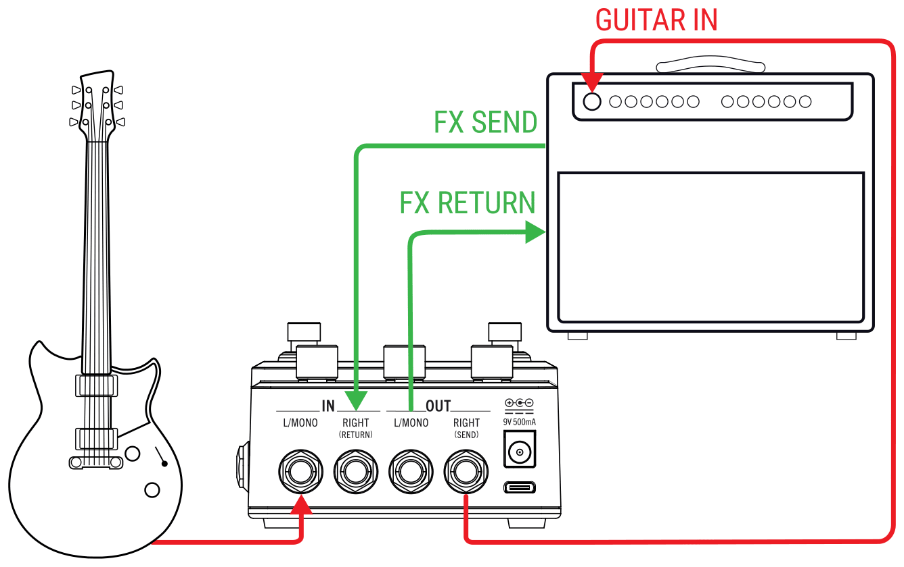
Press and hold the EFFECT knob to enter the Settings View.
Press › to go to page 2 and turn knob 2 to set the I/O Config option to the “Insert” setting.
Connect your guitar into HX One’s IN - L/MONO jack.
Optionally, you can connect pedals between your guitar and HX One. Typically, these would be a wah, pitch, compression, and distortion type pedals.
Connect HX One’s OUT - RIGHT (SEND) jack to the amp’s Guitar Input.
Connect the amp’s Effects Loop Send to HX One’s IN - RIGHT (RETURN) jack.
Connect HX One’s OUT - L/MONO jack to your amp’s Effects Loop Return.
Optionally, enter the HX One Settings View and configure the “Insert Position” (Page 2, Knob 3) option for your current preset.
If you’re using an HX One model you prefer positioned within your amp’s effects loop, choose “Pre.”
If you’re using an HX One model that you prefer positioned in front of your amp, choose “Post.”
Save your preset to retain these settings. You can configure each of your presets with the preferred effect model and Pre/Post setting.
TIP: To get even fancier with your setup, you can send MIDI to HX One from a modeler or other effect to recall presets, remotely control the Looper & effect parameters, or provide MIDI Clock tempo for syncing HX One’s time-based effects. See “MIDI”.
Enabling and Bypassing HX One
Press the On switch to toggle HX One as enabled or bypassed.
When enabled, you’ll see the ON LED lit brightly (see explanation of the LED colors below) and the Display shows the effect name in solid text.
When bypassed, the ON LED is dim and the Display shows the effect name in grayed text.
NOTE: There are two types of Bypass for HX One: Buffered DSP Bypass (the default setting), where any delay echoes and reverb tails decay naturally, or True Bypass, where mechanically switching relays route your signal directly from the inputs to the outputs with no processing or A/D/A conversion. You can change the Bypass behavior within the “Settings View”.
ON LED Colors
Whether HX One is in the Home, Preset List, or Effects Carousel Views, you’ll notice that the ON LED appears as one of several different colors to cleverly provide a visual indicator for the current effect’s category.
- Orange: Distortion
- Yellow: Dynamic, EQ
- Blue: Modulation
- Green: Delay
- Dark Orange: Reverb
- Purple: Pitch, Filter/Wah
- White: Looper
TIP: See “Effects” to see which effects models are offered within each of these categories.
Choosing an Effect
To select an effect model within the same category—say, changing a Simple Delay to a Reverse Delay—is as simple as just turning the EFFECT knob. This will incrementally load the next or previous model within the current category, and sequentially into the next or previous effects list categories. However, as HX One has over 250 models to choose from, using this method to change a distortion (beginning of the effects list) to a Looper (end of the list) is very slow! Instead, you should open the Effects Carousel:
Press and hold down the EFFECT knob while turning it to browse and select a category within the Effects Carousel View.
In our example, we’re choosing the Delay category within the Carousel. Release the EFFECT knob. Then press and release the EFFECT knob to select the desired category and open its Effect list.
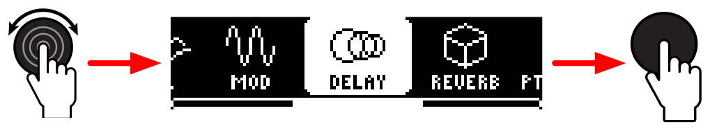
Within the selected category’s Effect list, turn the EFFECT knob to choose an effect and then press the knob to load it.
You’ll see that the Effect list’s category is indicated by the icon at the left (as well as by the ON LED’s color). We’re choosing the Mod/Chorus Echo model to load it.
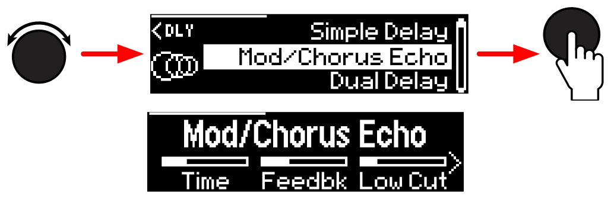
At any time from the Home View, you can press and release the EFFECT knob to show the current effect’s Category List.
As in the previous step’s illustration, turn the Effect knob to select a model and press the knob to load it.
Note the left arrow indicator at the top left of the Effect list screen. You can press the ‹ PAGE button to step back to the Effect Category list to choose a different category.
Within the Effect Category list, turn the EFFECT knob to choose a category, then press the knob to display the category’s Effect list. Here we’re choosing the Pitch/Synth category, from which a model can be loaded.
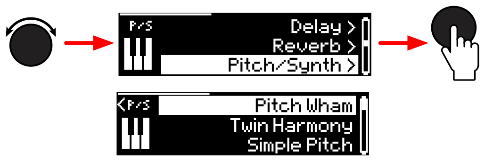
NOTE: Most HX One effects are stereo, with the exception of polyphonic pitch models and mono Looper operation. Please see “Effects” for details.
Editing the Current Effect
Press the Home ⌂ button to display the current effect and its parameters. Turn Knobs 1-3 to edit the three shown parameters.
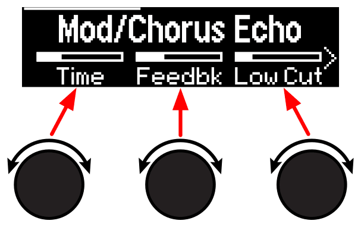
While adjusting an effect’s parameters, their values briefly appear:
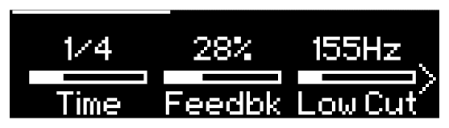
If the current effect model has more than three parameters, arrows appear to the right and/or left of the value bars, as well as a portion bar at the top. In our above example, the right arrow and portion bar indicate additional pages of parameters.
SHORTCUTS: For most time-based parameters such as a delay’s Time or a modulation’s Speed or Rate, press its knob to toggle between setting the value in ms or Hz versus note divisions (1/4-note, dotted 1/8-note, etc.).
For other parameters, press the knob to instantly reset to its default value. Even better, you can set your edited value as the model’s parameter default—see “Saving a Model’s User Default Settings”.
Press the ‹ or › PAGE buttons to access the previous or next parameter pages.
SHORTCUT: To jump to the last page of parameters, hold HOME ⌂ and press PAGE ›. To jump to the first page of parameters, hold HOME and press ‹.
If you want to retain all your current settings, use Save to create a preset.
NOTE: When you power off HX One, it restores your last bypass state and last-edited parameter changes on the next power up, provided that you wait 3 seconds or more after making changes before disconnecting the power.
Saving a Model’s User Default Settings
If you find yourself continually re-tweaking an effect model from its factory default settings, you can edit its settings and store them as your new defaults, so the model shows up that way every time you load it.
Load any effect model and tweak it exactly how you like it.
Configure any of its parameters, EXP/FLUX controller settings, and bypass state.
NOTE: With firmware version 3.81 (and later), the model’s bypass state is saved and recalled per preset.
Press and release both ‹ and › PAGE buttons, then press Knob 3 to set the User Default option.
All your current parameter settings are saved as the “User Default” for future uses of the model. (Existing presets that include the model are not affected.)
To return a model to its Factory Defaults, go to the User Default screen again and press Knob 2.
You’ll see the Factory Defaults restored the next time you load the effect.
Preset Mode
Adding and editing effects is all well and good, but having presets with all your specific effect and other settings just a tap away can be a faster way to work! Your HX One comes loaded with numerous Factory Presets, which you can recall and use as they are, modify, or completely replace with your own creations (more about Saving presets in the next section). To access HX One’s 128 preset locations, enter Preset Mode.
TIP: You can also load HX One’s presets remotely via MIDI—see “Preset Recall via MIDI Program Change”.
Press and release both the ON and TAP | FLUX switches to enter Preset Mode.
The 000~127 Preset List screen is displayed and the footswitch LEDs go dark. Note that the category type for the selected preset’s effect model is handily displayed at the left of the screen.
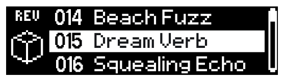
Press-release the TAP | FLUX ⌄ switch while in Preset Mode to load the next preset, or ON ⌃ to load the previous preset in the list.
Alternatively, you can turn the EFFECT knob to select through the list. You can also press and hold either footswitch to scroll through the preset list, then release on the desired selected preset to load it.
NOTE: You can utilize the Preset Select global setting (see “Settings View”) so that the selected next or previous preset loads instantly (the default behavior) or is queued only and loaded when you next press both the ON + TAP switches, the HOME button, or the EFFECT knob.
Saving/Naming a Preset
Press and hold the HOME button for 1 second to display the Save Preset View.
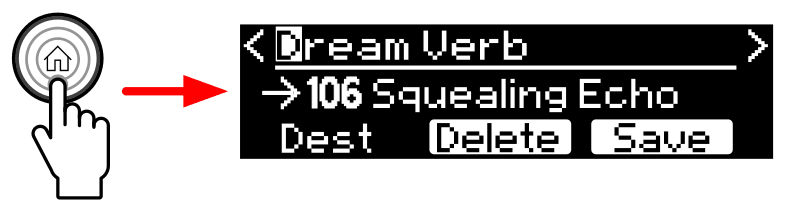
If you just want to Save the current preset without editing its name and to its current 000~127 location, skip to Step 5.
If you want to Rename your preset:
Press the ‹ and › PAGE buttons to move the edit cursor left and right and turn the EFFECT knob to scroll through available characters.
The list of characters wraps around; that is, turning the EFFECT knob clockwise past the last character [/] cycles back to the first character [SPACE].
Press the EFFECT knob to cycle through A, a, 0, and [SPACE]
Press Knob 2 (Delete) to clear the current character and shift all following characters to the left.
Preset names can be up to 16 characters.
If you want to Save your preset to a different 000~127 location:
Turn Knob 1 (Destination) to choose the 0~127 location to which you want to save. The destination number and its existing preset’s name appear on the center line, to the right of the arrow symbol (shown as “106 Squealing Echo” in the preceding image).
When you’re happy with the name and destination, press Knob 3 (Save) or hold the HOME button for 1 second to Save and overwrite the existing preset in the destination.
To exit without saving, press and release the HOME button.
NOTE: HX One presets are not compatible with other Line 6 Helix/HX family devices or with HX Edit and Helix Native software.
Setting a TAP Tempo
The TAP | FLUX switch can be configured for TAP Tempo (as indicated by the TAP LED above flashing red, the default), or for FLUX functionality (LED is white). If not already, you’ll want to press-hold the switch to set it for TAP functionality.
Press the TAP switch repeatedly to set a tempo in BPM (Beats Per Minute).
You’ll see the TAP LED flash red at your entered BPM rate. Certain Delay, Reverb, and Modulation effects models’ parameters, such as Time, Rate, and Speed, can be represented with note values (1/4-note, dotted 1/8-note, etc.) or fixed numeric values (ms or Hz). When set to note values, the parameter will be synced to Tap Tempo. Press the parameter knob to toggle between note or ms (or Hz) values.
TIP: Also, see the “Settings View” where you can fine-tune your Tap Tempo value, configure the Tap Tempo as “Per Preset” (the default) or “Global,” or configure your HX One device to sync tempo with external MIDI hardware and software via MIDI Clock.
Using the Tuner
Neatly tucked away within HX One is a chromatic Tuner to keep your instrument in tune. You can access it from the Home View.
NOTE: Yeah, we realize that if you’re positioning HX One after other pedals, especially such as pitch or modulation type pedals, a Tuner within HX One is really not going to be able to detect your instrument’s true pitch and tune very well! But we’ve included a built-in Tuner anyway for use in cases when it is not preceded by other active effects. Please tune responsibly.
Press and hold both the ON and TAP | FLUX switches for two seconds to enter the Tuner.
Pluck an individual string on your instrument.
When your input signal enters the Tuner, the Tuner will detect and display the target note and indicators to let you know how flat or sharp your instrument is compared to the target note.
You’ll want to tune your string so that the moving “needle” indicator becomes centered in the display and both the ON and TAP | FLUX LEDs are lit green.
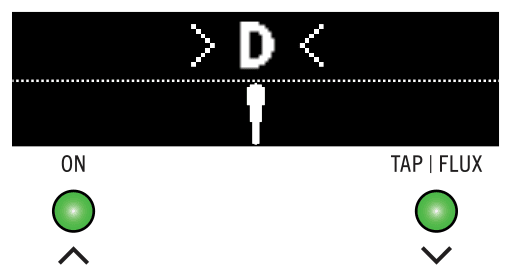
IN TUNE 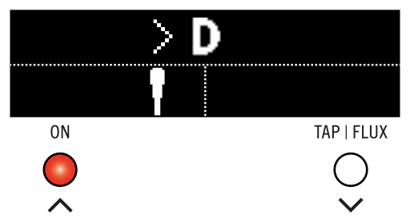
FLAT 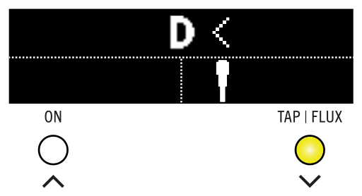
SHARP Press the Home button or either footswitch to exit the tuner.
NOTE: By default, your output signal is muted when the Tuner is engaged, and the Tuner is set to a reference pitch of 440Hz. You can change these values within the “Settings View”.
Effects
The HX One device comes loaded with effects of the Line 6 award-winning HX Effects guitar processor, including selected effects from the classic DL4, DM4, MM4, and FM4 stompboxes and M13, M9, and M5 processors. You’ll find all effects neatly organized by category within the Effects Carousel. All effects models are listed per category within the following tables for your reference.
With the exception of polyphonic pitch type models and mono Loopers (as indicated in the following tables), all HX One effects models process your signal in stereo. Legacy type models, just as on earlier Line 6 devices, are limited to mono-in/stereo-out processing. Stereo models process the signal as discrete stereo-in, stereo-out (provided you are using both the Left and Right Input and Output jacks and the default I/O Config - Stereo option)—see the “Settings View”.
TIP: When connecting only the L-MONO OUT jack, HX One’s output signal is folded to mono.
Turn the EFFECT knob to load the next or previous model, or hold and turn the EFFECT knob to select an effect category—see “Choosing an Effect”.
Effects Models - Reference Tables (Firmware v3.83)
Distortion
| Model | Based On* |
|---|---|
| —HX MODELS— | |
| Kinky Boost | Xotic® EP Booster |
| Deranged Master | Dallas Rangemaster Treble Booster |
| Minotaur | Klon® Centaur |
| Teemah! | Paul Cochrane Timmy® Overdrive |
| Heir Apparent | Analogman Prince of Tone |
| Tone Sovereign | Analogman King of Tone |
| Alpaca Rogue | Way Huge® Red Llama (modded) |
| Compulsive Drive | Fulltone® OCD |
| Dhyana Drive | Hermida Zendrive |
| Horizon Drive | Horizon Precision Drive |
| Valve Driver | Chandler Tube Driver |
| Top Secret OD | DOD® OD-250 |
| Prize Drive | Nobels® ODR-1(bc) |
| Scream 808 | Ibanez® TS808 Tube Screamer® |
| Pillars | Earthquaker Devices® Plumes |
| Hedgehog D9 | MAXON® SD9 Sonic Distortion |
| Stupor OD | BOSS® SD-1 Overdrive |
| Deez One Vintage | BOSS DS-1 Distortion (Made-in-Japan) |
| Deez One Mod | BOSS DS-1 Distortion (Keeley modded) |
| Ratatoullie Dist | Pro Co RAT (with LM308 opamp) |
| Vermin Dist | Pro Co RAT |
| Vital Dist | Earthquaker Devices Life - Octave/Distortion circuit |
| Vital Boost | Earthquaker Devices Life - Boost circuit |
| KWB | Benadrian Kowloon Walled Bunny Distortion |
| Legendary Drive | Carvin® VLD1 Legacy Drive (hi gain channel) |
| Swedish Chainsaw | BOSS HM-2 Heavy Metal Distortion (MIJ) |
| Arbitrator Fuzz | Arbiter® Fuzz Face® |
| Pocket Fuzz | Jordan Boss Tone Fuzz |
| Bighorn Fuzz | ‘73 Electro-Harmonix® Ram’s Head Big Muff Pi |
| Triangle Fuzz | Electro-Harmonix Big Muff Pi |
| Dark Dove Fuzz | Electro-Harmonix Russian Big Muff Pi |
| Ballistic Fuzz | Euthymia ICBM Fuzz |
| Industrial Fuzz | Z.Vex Fuzz Factory |
| Tycoctavia Fuzz | Tycobrahe® Octavia |
| Wringer Fuzz | Garbage’s modded BOSS FZ-2 |
| Thrifter Fuzz | Line 6 Original |
| Xenomorph Fuzz | Subdecay Harmonic Antagonizer |
| Megaphone | Megaphone |
| Bitcrusher | Line 6 Original |
| Ampeg Scrambler | Ampeg® Scrambler Bass Overdrive |
| ZeroAmp Bass DI | Tech 21® SansAmp Bass Driver DI V1 |
| Regal Bass DI | Noble Preamp Bass DI |
| Obsidian 7000 | Darkglass® Electronics Microtubes® B7K Ultra |
| Clawthorn Drive | Wounded Paw Battering Ram |
| —LEGACY MODELS— | |
| Tube Drive | Chandler Tube Driver |
| Screamer | Ibanez Tube Screamer |
| Overdrive | DOD Overdrive/Preamp 250 |
| Classic Dist | Pro Co RAT |
| Heavy Dist | BOSS Metal Zone |
| Colordrive | Colorsound® Overdriver |
| Buzz Saw | Maestro® Fuzz Tone |
| Facial Fuzz | Arbiter Fuzz Face |
| Jumbo Fuzz | Vox® Tone Bender |
| Fuzz Pi | Electro-Harmonix Big Muff Pi |
| Jet Fuzz | Roland® Jet Phaser |
| L6 Drive | Colorsound Overdriver (modded) |
| L6 Distortion | Line 6 Original |
| Sub Oct Fuzz | PAiA Roctave Divider |
| Octave Fuzz | Tycobrahe Octavia |
| Bronze Master | Maestro Bass Brassmaster |
| Killer Z | BOSS Metal Zone MT-2 |
Dynamics
| Model | Based On* |
|---|---|
| —HX MODELS— | |
| Deluxe Comp | Line 6 Original |
| Red Squeeze | MXR Dyna Comp |
| Kinky Comp | Xotic SP Compressor |
| Ampeg Opto Comp | Ampeg Opto Comp compressor |
| Rochester Comp | Ashly® CLX-52 (in conjunction w/ B. Sheehan) |
| LA Studio Comp | Teletronix® LA-2A® |
| 3-Band Comp | Line 6 Original |
| Noise Gate | Line 6 Original |
| Hard Gate | Line 6 Original |
| Horizon Gate | Horizon Precision Drive - Gate Circuit |
| Autoswell | Line 6 Original |
| Feedbacker (mono)† | Line 6 Original, Feedback Generator |
| —LEGACY MODELS— | |
| Tube Comp | Teletronix LA-2A |
| Red Comp | MXR Dyna Comp |
| Blue Comp | BOSS CS-1 |
| Blue Comp Treb | BOSS CS-1 (Treble switch on) |
| Vetta Comp | Line 6 Original |
| Vetta Juice | Line 6 Original |
| Boost Comp | MXR Micro Amp |
| —HX MODELS— | |
| Volume Pedal | Line 6 Original |
| Pan | Line 6 Original (stereo only) |
| Gain | Line 6 Original |
| Stereo Width | Line 6 Original (stereo only) |
| Stereo Imager | Line 6 Original (stereo only) |
† The Feedbacker model utilizes DSP-intensive polyphonic pitch shifting and, therefore, is mono.
EQ
| Model | Based On* |
|---|---|
| —HX MODELS— | |
| Simple EQ | Line 6 Original |
| Low and High Cut | Line 6 Original |
| Low/High Shelf | Line 6 Original |
| Parametric | Line 6 Original |
| Tilt | Line 6 Original |
| 10 Band Graphic | MXR 10-Band Graphic EQ |
| Cali Q Graphic | MESA/Boogie Mark IV Graphic EQ |
| Acoustic Sim | Line 6 Original |
Modulation
| Model | Based On* |
|---|---|
| —HX MODELS— | |
| Optical Trem | Fender® optical tremolo circuit |
| 60s Bias Trem | Vox AC-15 Tremolo |
| Tremolo/Autopan | BOSS PN-2 |
| Harmonic Tremolo | Line 6 Original |
| Bleat Chop Trem | Lightfoot Labs Goatkeeper |
| Script Mod Phase | MXR Phase 90 |
| Pebble Phaser | Electro-Harmonix Small Stone |
| Ubiquitous Vibe | Shin-ei Uni-Vibe® |
| FlexoVibe | Line 6 Original |
| Deluxe Phaser | Line 6 Original |
| Gray Flanger | MXR 117 Flanger |
| Harmonic Flanger | A/DA Flanger |
| Courtesan Flange | Electro-Harmonix Deluxe EM |
| Dynamix Flanger | Line 6 Original |
| Chorus | Line 6 Original |
| 70s Chorus | BOSS CE-1 |
| PlastiChorus | Modded Arion SCH-Z chorus |
| Ampeg Liquifier Chorus | Ampeg Liquifier Chorus |
| Trinity Chorus | Dytronics® Tri-Stereo Chorus |
| 4-Voice Chorus | Line 6 Original |
| Bubble Vibrato | BOSS VB-2 Vibrato |
| Vibe Rotary | Fender Vibratone |
| 122 Rotary | Leslie® 122 |
| 145 Rotary | Leslie 145 |
| Triple Rotary | Yamaha® RA-200 |
| Retro Reel | Line 6 Original |
| Double Take | Line 6 Original |
| AM Ring Mod | Line 6 Original |
| Pitch Ring Mod | Line 6 Original |
| Poly Detune (mono)† | Line 6 Original |
| —LEGACY MODELS— | |
| Pattern Tremolo | Line 6 Original |
| Panner | Line 6 Original |
| Bias Tremolo | 1960 Vox AC-15 Tremolo |
| Opto Tremolo | 1964 Fender Deluxe Reverb® |
| Script Phase | MXR Phase 90 (script logo version) |
| Panned Phaser | Ibanez Flying Pan |
| Barberpole | Line 6 Original |
| Dual Phaser | Mu-Tron® Bi-Phase |
| U-Vibe | Shin-ei Uni-Vibe |
| Phaser | MXR Phase 90 |
| Pitch Vibrato | BOSS VB-2 |
| Dimension | Roland Dimension D |
| Analog Chorus | BOSS CE-1 |
| Tri Chorus | Dytronics Tri-Stereo Chorus |
| Analog Flanger | MXR Flanger |
| Jet Flanger | A/DA Flanger |
| AC Flanger | MXR Flanger |
| 80A Flanger | A/DA Flanger |
| Frequency Shift | Line 6 Original |
| Ring Modulator | Line 6 Original |
| Rotary Drum | Fender Vibratone |
| Rotary Drum/Horn | Leslie 145 |
| Tape Eater | Line 6 Original |
| Warble-Matic | Line 6 Original |
| Random S&H | Line 6 Original |
| Sweeper | Line 6 Original |
† The Poly Detune model utilizes DSP-intensive polyphonic pitch shifting and, therefore, is mono.
Delay
| Model | Based On* |
|---|---|
| —HX MODELS— | |
| Simple Delay | Line 6 Original |
| Mod/Chorus Echo | Line 6 Original |
| Dual Delay | Line 6 Original |
| Multitap 4 | Line 6 Original |
| Multitap 6 | Line 6 Original |
| Ping Pong | Line 6 Original |
| Sweep Echo | Line 6 Original |
| Ducked Delay | TC Electronic® 2290 |
| Reverse Delay | Line 6 Original |
| Vintage Digital | Line 6 Original |
| Vintage Swell | Line 6 Original |
| Pitch Echo | Line 6 Original |
| Transistor Tape | Maestro Echoplex® EP-3 |
| Cosmos Echo | Roland RE-201 Space Echo® |
| Harmony Delay | Line 6 Original |
| Bucket Brigade* | BOSS DM-2 |
| Adriatic Delay | BOSS DM-2 w/ Adrian Mod |
| Adriatic Swell | Line 6 Original |
| Elephant Man* | Electro-Harmonix Deluxe Memory Man |
| Multi Pass | Line 6 Original |
| Heliosphere | Line 6 Original |
| Glitch Delay | Line 6 Original |
| Euclidean Delay | Line 6 Original |
| ADT* | Line 6 Original |
| Crisscross | Line 6 Original |
| Tesselator | Line 6 Original |
| Ratchet | Line 6 Original |
| Poly Sustain (mono)† | Line 6 Original |
| —LEGACY MODELS— | |
| Ping Pong | TC Electronic 2290 |
| Dynamic | TC Electronic 2290 |
| Stereo | Line 6 Original |
| Digital | Line 6 Original |
| Dig w/Mod | Line 6 Original |
| Reverse | Line 6 Original |
| Lo Res | Line 6 Original |
| Tube Echo | Maestro Echoplex EP-1 |
| Tape Echo | Maestro Echoplex EP-3 |
| Sweep Echo | Line 6 Original |
| Echo Platter | Binson® EchoRec® |
| Analog Echo | BOSS DM-2 |
| Analog w/Mod | Electro-Harmonix Deluxe Memory Man |
| Auto-Volume Echo | Line 6 Original |
| Multi-Head | Roland RE-101 Space Echo |
| Bubble Echo | Line 6 Original |
| Phaze Eko | Line 6 Original |
† The Poly Sustain model utilizes DSP-intensive polyphonic pitch shifting and, therefore, is mono.
*NOTE: The maximum TIME value varies among Delay models, with the Bucket Brigade and Elephant Man models having the lowest maximum at 300 and 500 ms, respectively (true to the original effects on which these are based). All Delays can be synced to Tempo, but for slow Tempos, Note Divisions will automatically change to larger values than shown to retain a “musically-correct” division when the TIME limit is reached.
Reverb
| Model | Based On* |
|---|---|
| —HX MODELS— | |
| Dynamic Hall | Line 6 Original |
| Dynamic Plate | Line 6 Original |
| Dynamic Room | Line 6 Original |
| Dynamic Ambience | Line 6 Original |
| Dynamic Bloom | Line 6 Original |
| Shimmer | Line 6 Original |
| Hot Springs | Line 6 Original |
| Nonlinear | Line 6 Original |
| Glitz | Line 6 Original |
| Ganymede | Line 6 Original |
| Searchlights | Line 6 Original |
| Plateaux | Line 6 Original |
| Double Tank | Line 6 Original |
| —LEGACY MODELS— | |
| Plate | Line 6 Original |
| Room | Line 6 Original |
| Chamber | Line 6 Original |
| Hall | Line 6 Original |
| Echo | Line 6 Original |
| Tile | Line 6 Original |
| Cave | Line 6 Original |
| Ducking | Line 6 Original |
| Octo | Line 6 Original |
| ‘63 Spring | Line 6 Original |
| Spring | Line 6 Original |
| Particle Verb | Line 6 Original |
Pitch/Synth
| Model | Based On* |
|---|---|
| —HX MODELS— | |
| Pitch Wham | Digitech Whammy® |
| Twin Harmony | Eventide® H3000 |
| Simple Pitch | Line 6 Original |
| Dual Pitch | Line 6 Original |
| Boctaver | Boss OC-2 Octaver |
| 3 OSC Synth | Line 6 Original |
| 3 Note Generator‡ | Line 6 Original |
| 4 OSC Generator‡ | Line 6 Original |
| Poly Pitch (mono)† | Line 6 Original |
| Poly Wham (mono)† | Line 6 Original |
| Poly Capo (mono)† | Line 6 Original |
| 12 String (mono)† | Line 6 Original |
| —LEGACY MODELS— | |
| Bass Octaver | EBS® OctaBass |
| Smart Harmony | Eventide H3000 |
| Octi Synth | Line 6 Original |
| Synth O Matic | Line 6 Original |
| Attack Synth | Korg® X911 Guitar Synth |
| Synth String | Roland GR700 Guitar Synth |
| Growler | Line 6 Original |
| Buzz Wave | Line 6 Original |
| Rez Synth | Line 6 Original |
| Seismik Synth | Line 6 Original |
| Analog Synth | Line 6 Original |
| Synth Lead | Line 6 Original |
| String Theory | Line 6 Original |
| Synth FX | Line 6 Original |
| Saturn 5 Ring Mod | Line 6 Original |
| Synth Harmony | Line 6 Original |
| Double Bass | Line 6 Original |
† These indicated Pitch/Synth models utilize DSP-intensive polyphonic pitch shifting and, therefore, are mono.
‡ The 3 Note Generator and 4 OSC Generator models make sound without any instrument connected, therefore, these models are turned off by default when loaded. Be sure to first set your amplifier to low volume before enabling via the ON footswitch.
Wah/FLT - Wah & Filter
| Model | Based On* |
|---|---|
| —HX MODELS— | |
| UK Wah 846 | Vox V846 |
| Teardrop 310 | Dunlop® Cry Baby® Wah Fasel model 310 |
| Fassel | Dunlop Cry Baby Super Wah |
| Weeper | Arbiter Cry Baby Wah |
| Chrome | Vox V847 Wah |
| Chrome Custom | Modded Vox V847 Wah |
| Throaty | RMC® Real McCoy Wah |
| Vetta Wah | Line 6 Original |
| Colorful | Colorsound Wah-fuzz |
| Conductor | Maestro Boomerang Wah |
| Teardrop Bass Q | Modified Dunlop 105Q |
| Mutant Filter | Musitronics Mu-Tron III |
| Mystery Filter | Korg A3 |
| Autofilter | Line 6 Original |
| Asheville Pattrn | Moog® Moogerfooger® MF-105M MuRF Filter |
| —LEGACY MODELS— | |
| Voice Box | Line 6 Original |
| V Tron | Musitronics® Mu-Tron III |
| Q Filter | Line 6 Original |
| Seeker | Z Vex Seek Wah |
| Obi Wah | Oberheim® voltage-controlled S&H filter |
| Tron Up | Musitronics Mu-Tron III (up position) |
| Tron Down | Musitronics Mu-Tron III (down position) |
| Throbber | Electrix® Filter Factory |
| Slow Filter | Line 6 Original |
| Spin Cycle | Craig Anderton’s Wah/Anti-Wah |
| Comet Trails | Line 6 Original |
* See “U.S. Registered Trademarks”. All product names used in this document are trademarks of their respective owners and neither Yamaha Guitar Group nor Line 6 are associated or affiliated with them. These trademarks appear solely to identify products whose tones and sounds were studied by Line 6 during sound model development.
Common FX Settings
| Parameter | Description |
|---|---|
| Drive | Adjusts the amount of overdrive, distortion, or fuzz. |
| Bass | Adjusts the bass level. |
| Mid | Adjusts the midrange level. |
| Treble | Adjusts the treble level. |
| Speed | Adjusts the speed of the effect, with higher settings providing faster rates. Press the knob to toggle between Hz and note values. Choosing a Hz value provides a specific modulation speed in cycles per second; choosing a note value provides a time based on the current tempo. Not all Speed parameters can be synced to note values, as they may be non-linear and highly interactive. (Note that stepping on TAP once resets any LFO-based effects, such as tremolos and rotary speakers.) |
| Rate | Adjusts the rate of the effect, with higher settings providing faster rates. Press the knob to toggle between numeric and note values. Not all Rate parameters can be synced to note values, as they may be non-linear and highly interactive. (Note that stepping on TAP once resets any LFO-based effects, such as tremolos and rotary speakers.) |
| Time | Adjusts the delay/repeat time, with higher settings providing longer delays. Press the knob to toggle between ms and note values. Choosing a ms value provides a specific time in milliseconds; choosing a Note Division value provides a time based on the current tempo. With a note division value, this parameter’s value is retained when changing models. |
| Depth | Adjusts the intensity of the modulation. Higher settings result in more extreme pitch bending, wobble, or throb, depending on the effect. |
| Feedback | Adjusts the amount of delayed signal fed back into the effect. Higher settings can provide more dramatic textures. |
| Decay | Sets the length of time the reverb effect sustains. |
| Predelay | Determines the time before the reverb effect is heard—higher settings emulate larger spaces. |
| Scale | On stereo delays, the Scale offers control over the left & right channel repeats proportionately. The left channel repeats following the Time value, and the right channel will repeat at a time that is the percentage of the left time. For example, if a delay’s Time is set for 1 second and the Scale set to 75%, the left channel will repeat at 1 second and the right at 750 milliseconds (ms). |
| Spread | Spread differs slightly among stereo delay effects. For most, it adjusts how widely the repeats bounce left and right. For example, with the Ping Pong Delay, 0 is in the middle (mono), and 10 is full left to right panning on the repeats. For modulated stereo delays, Spread affects the LFOs’ (low frequency oscillators) stereo modulation behavior. At 0, the LFOs are in sync. At 10, the two LFOs are 180 degrees out of sync, so that when one side is modulating up, the other side is modulating down. |
| Headroom | Some mod and delay models’ internal signal paths exhibit a bit of grit. Negative values increase the perceived amount of grit; positive values clean things up a bit. At 0dB, the model behaves like the original pedal. |
| Low Cut Hi Cut | Filters a portion of the block’s bass and/or treble frequencies, which can help remove rumble and/or high-end harshness. |
| Mix | Blends the effected “wet” signal vs. the “dry” signal passed through the effect model. When set to 0%, the path bypasses the effect completely. When set to 100%, the entire input signal is fed through the effect, and no dry thru signal is heard. |
| Level | Adjusts the overall output level of the model. You should typically leave this at 0.0dB, unless an output boost or cut is desired when HX One is enabled. Where the original pedal’s level or volume knob behavior doesn’t really apply to dB values, 0.0-10 may be used. |
Looper
HX One offers two different Looper types, the Simple and Shuffling Looper, each of which are selectable from the Effect List as Mono or Stereo.
| Model | Max. Loop Length |
|---|---|
| Simple Looper M (mono) | 60 seconds* |
| Simple Looper S (stereo) | 30 seconds* |
| Shuffling M (mono) | 60 seconds |
| Shuffling S (stereo) | 30 seconds |
For full stereo Looper operation - you must use the following configuration:
- Select a stereo (Simple Looper S or Shuffling S) Looper from the Effect List
- Set the “Settings View” - I/O Config to “Stereo”
- Connect your stereo inputs to both the IN - L/MONO and RIGHT jacks
- Connect both the OUT - L/MONO and RIGHT jacks to your stereo amplifier/effects
NOTE: Whenever the “Settings View” - I/O Config is set to “Insert,” Looper recording and playback are mono.
Loop recording or playback is automatically stopped when changing presets. Your recorded loop is also discarded when loading another preset or when powering HX One off.
*TIP: You can change the Simple Looper between Full-Speed and Half-Speed via MIDI. When recording in Half-Speed mode, the Simple Looper’s maximum record time is doubled. You can also control other Looper transport functions remotely via MIDI—see page 32.
Using the Simple Looper
The Simple Looper is designed to be fast and simple to use, allowing you to capture song ideas or create a jam track at the stomp of a footswitch.
Press and turn the EFFECT knob, select the Looper category, and choose the mono or stereo Simple Looper from the Effect list.
The Looper will be automatically assigned to the ON footswitch. You’ll see the ON LED initially appear dim white. Optionally, you can adjust the Simple Looper’s parameters.
Parameter Description Playbk Adjusts looper playback level. You may find it useful to turn this down a bit so your live guitar can be slightly louder. Ovrdub Relatively sets the level of your loop while overdubbing. For example, if your Overdub Level is set to 90%, each time your loop repeats, its volume will be reduced by 10%, sounding quieter and quieter with each overdub pass. Low Cut
High CutFilters a portion of the loop’s bass and treble frequencies, which can improve the mix with your live guitar. To start recording your loop, press and release the ON switch.
The ON LED lights red, indicating the loop is recording.
Press the ON switch again.
The ON LED lights green, indicating that recording has stopped and your loop is playing back. You can now jam along endlessly with your repeating loop.
Press the ON switch again.
The ON LED lights amber, indicating the loop is in overdub mode. Play some additional riffs to layer more onto your loop. Subsequent presses of the ON switch toggle between the play and overdub modes.
While the Looper is in play or overdub mode, press and hold the ON switch for 1 second.
Your most recent recording is undone. Hold the switch again to redo the recording.
Quickly double-press the ON switch.
Playback/recording stops, and the LED lights bright white, indicating a loop is in memory.
While Looper playback/recording is stopped, press and hold the ON switch for 1 second.
Your most recent recording is deleted, and the LED lights dim white.
Using the Shuffling Looper
Part looper, part sampler, part performance instrument—the Shuffling Looper chops up your recorded loop, randomizes the slices, and gives you control over reordering, octave shifting, reversing, repeating, and more.
Press and turn the EFFECT knob, select the Looper category, and choose the mono or stereo Shuffling Looper from the Effect list.
The Looper will be automatically assigned to the ON footswitch. You’ll see the ON LED initially appear dim white.
Turn knob 1 (Slices) to set the number of slices your loop will be chopped into.
Press the ON switch to begin recording.
The ON LED lights red, indicating the loop is recording.
When done recording your loop, press the ON switch.
The ON LED lights green and the sliced loop sequence immediately plays.
During playback, adjust the following Shuffling Looper parameters (or assign them to the Expression/FLUX controller):
Parameter Description Slices Determines the number of slices your loop will be chopped into SeqLength Determines the number of steps in the sequence before it loops Shuffle Determines the likelihood of slices shuffling/reordering Pitch Determines the likelihood of your slices changing pitch, based on the new Interval 1 and Interval 2 settings Reverse Determines the likelihood of slices playing backward Repeat Determines the likelihood of slices repeating Smooth Higher values apply smoothing between slices and can give a synth-pad type quality. Lower values maintain transients. Or, set it just high enough to avoid pops and clicks Drift Determines the likelihood of a slice changing after it has played Playback Sets the playback level of the loop sequence Low Cut
Hi CutFilters a portion of the loop’s bass and treble frequencies, which can improve the mix with your live guitar. Interval 1
Interval 2Sets the pitch of some slices, the likelihood of which is determined by the Pitch parameter (from an octave down to an octave up) TIP: To only use pitch and reverse effects on your loop, turn Shuffle down to 0% and set the Slices and SeqLen to the same value.
Want to change it up? While the loop is playing, press the ON switch to randomize its slice sequence.
Quickly double-press the ON switch.
Playback/recording stops, and the LED lights white, indicating a loop is in memory.
While the loop is playing or stopped, press and hold the ON switch.
The recording is deleted, and the LED lights dim white.
U.S. Registered Trademarks
All product names used in this document are trademarks of their respective owners and neither Yamaha Guitar Group nor Line 6 are associated or affiliated with them. These trademarks appear solely to identify products whose tones and sounds were studied by Line 6 during sound model development.
- Arbiter is a registered trademark of Sound City Amplification LLC.
- Ashly is a registered trademark of Ashly Audio, Inc.
- Binson, Dytronics, LA-2A and Teletronix are registered trademarks of Universal Audio, Inc.
- BOSS, Space Echo, and Roland are registered trademarks of Roland Corporation U.S.
- Carvin is a registered trademark of Carvin Corp.
- Colorsound is a registered trademark of Sola Sound Limited Corporation, UK.
- Cry Baby, Dunlop, Fuzz Face, MXR and Uni-Vibe are registered trademarks of Dunlop Manufacturing, Inc.
- Darkglass and Microtubes are registered trademarks of Darkglass Electronics, TMI Douglas Castro.
- Digitech Whammy is a registered trademark of Harman International Industries, Inc.
- DOD is a registered trademark of DOD Electronics Corporation.
- EarthQuaker Devices and Plumes are registered trademarks of EarthQuaker Devices, LLC.
- EBS is a registered trademark of EBS Holding.
- Echoplex is a registered trademark of Dunlop Manufacturing, Inc.
- EchoRec is a registered trademark of Burkett, Mary A.
- Electrix is a trademark or registered trademark of IVL Technologies, Ltd. in the U.S. and/or other jurisdictions.
- Electro-Harmonix is a registered trademark of New Sensor Corp.
- Eventide is a registered trademark of Eventide Inc.
- Fender is a registered trademark of Fender Musical Instruments Corp.
- Fulltone is a registered trademark of Fulltone Musical Products, Inc.
- Gibson and Maestro are registered trademarks of Gibson Guitar Corp.
- Heil Sound is a registered trademark of Heil Sound Ltd.
- Ibanez is a registered trademark of Hoshino, Inc.
- Klon is a registered trademark of Klon, LLC.
- Korg is a registered trademark of Korg, Inc.
- Leslie is a registered trademark of Suzuki Musical Instrument Manufacturing Co. Ltd.
- MAXON is a registered trademark of Nisshin Onpa Co., Ltd.
- MESA/Boogie is a registered trademark of Gibson, Inc.
- Moog and Moogerfooger are registered trademarks of Moog Music, Inc.
- Musitronics is a registered trademark of Mark S. Simonsen.
- Mu-Tron is a registered trademark of Henry Zajac.
- Nobels is a registered trademark of Kurzke, Bernhard, DBA Music Center Bernhard Kurzke Individual Fed Rep Germany.
- RMC is a registered trademark of Richard McClish.
- TC Electronic is a registered trademark of MUSIC Group IP Ltd.
- Tech21 is a registered trademark of Tech21 Licensing Ltd.
- Timmy is a registered trademark of Paul Cochrane AKA PAULCAUDIO.
- Tube Screamer is a registered trademark of Hoshino Gakki Co. Ltd.
- Tycobrahe is a registered trademark of Kurt Stier.
- USB-C is a registered trademark of USB Implementers Forum, Inc.
- Vox is a registered trademark of Vox R&D Limited.
- Way Huge is a registered trademark of Saucy Inc.
- Xotic is a registered trademark of Prosound Communications, Inc.
- Yamaha is a registered trademark of Yamaha Corporation.
Expression Pedal, FLUX Mode, & Footswitch Setup
HX One supports the use of several controller types for added control during a performance. The most obvious controller would be a connected expression pedal (such as for Wah or Pitch Wham). But, you can also utilize FLUX Mode for a footswitch to “ramp” or toggle between two values of any effect parameter or parameters. Additionally, you can connect up to two external footswitches and configure them individually to control TAP, FLUX, or Preset changes.
TIP: HX One also includes support for many parameters to be controlled via MIDI—see page 30.
“So what is this Expression and FLUX Mode stuff all about?”
Fair question... The big idea is that you can configure any effect’s parameter—for example, a Delay’s Feedback parameter—with your preferred “Min” and a “Max” values, which can then be remotely recalled by either an expression pedal or the TAP | FLUX switch (or a FLUX-assigned FS3 or FS4 footswitch).
When using an expression pedal - the Min value is recalled when you move the pedal to the “heel” position and the Max at the “toe” position, allowing you to manually sweep the defined range of the Feedback parameter in real-time.
When using the FLUX switch - (press-hold the TAP | FLUX switch to set it to FLUX mode, where the LED is lit white) the Min and Max Feedback values are recalled on your toggles of the footswitch, and you can configure the specific time it takes to “ramp” between the two.
- The first toggle ramps from the Min to Max value. You can adjust the effect’s “OnTime” and “OnCurv” parameters to set the duration of time and shape of the curve used for any assigned parameter of the effect to automatically ramp from Min to Max.
- The next toggle ramps from the Max to Min value. You can adjust the effect’s “OffTime” and “OffCurv” parameters to set the duration of time and shape of the curve used for any assigned parameter of the effect to automatically ramp from Max to Min.
- You can optionally configure an external footswitch for “FLUX” to toggle your Exp/FLUX assigned parameters—see the following sections.
Note that you can optionally configure multiple parameters of the current effect to be controlled simultaneously! Your customized Expression/FLUX Min and Max values are stored individually with each preset. Also see “Creating Expression/FLUX Assignments” for more on using these controllers.
Connecting an Expression Pedal and Footswitches
You’ll want to decide if you want to use just an expression pedal, a pedal + single footswitch, or two footswitches. Depending on which you want to connect, you’ll need to configure HX One’s Settings View options for your specific setup. Please see the following setup examples for details.
NOTE: Expression pedal and footswitches are sold separately:
The Line 6 EXP-1 pedal is a fine choice, or most 3rd party expression pedals will work as well. For single or dual external footswitches, you’ll want to get the “momentary” (non-latching) type.
TS versus TRS Cable Types
First things first... In case you are not already familiar, you’ll want to be able to identify the difference between these two types of 1/4" cable connections for your expression pedal or footswitches for our examples in this section:
- A Tip-Sleeve (TS) type cable consists of two conductors, the Tip (positive) and Sleeve (ground).
- A Tip-Ring-Sleeve (TRS) type cable consists of three conductors: the Tip (positive 1), Ring (positive 2), and Sleeve (common ground).
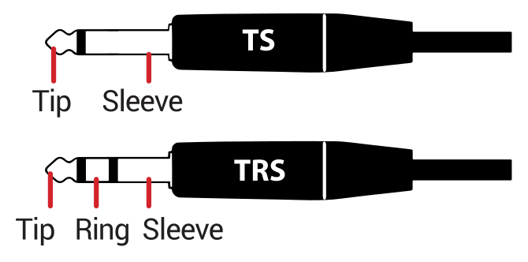
The HX One EXP PEDAL jack is a TRS type jack, into which you can connect a single expression pedal using a TS cable, or a dual-footswitch using a TRS cable. It is also possible to connect an expression pedal with a TS cable and a footswitch with a TS simultaneously, provided you connect them into a dual TS-to-TRS splitter (or “Y” adapter). Please see the following hookup examples.
Connecting an Expression Pedal
If you’re connecting only an expression pedal, use a TS instrument cable.
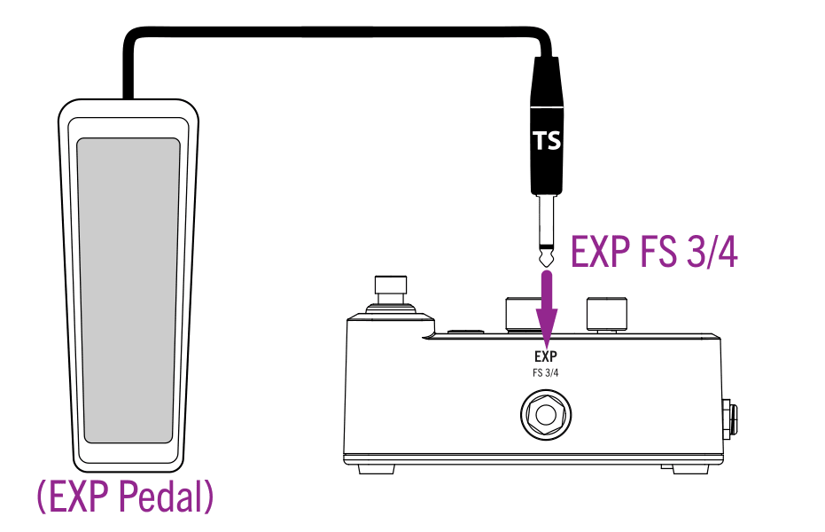
For this expression pedal connection, you’ll need to keep the “Settings View” - Pedal Jack option set to the default “ExpFS4” setting for proper pedal and device operation.
Connecting an Expression Pedal and a Footswitch
For this setup, use a dual TS-to-TRS splitter. Your expression pedal should connect to the “Tip” and the footswitch to the “Ring” leads of the splitter.
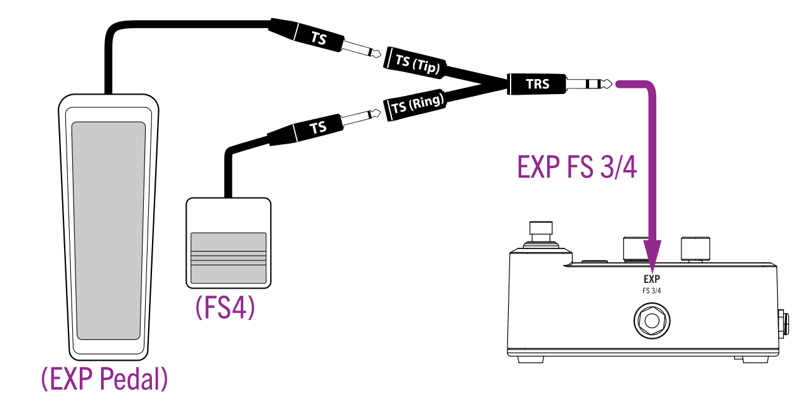
For this connection, you’ll need to keep the “Settings View” - Pedal Jack set to the default “ExpFS4” setting for proper controller and device operation. The footswitch controls FS4 which, by default, triggers the “Next” preset switching option. Alternatively, you can use the Settings View - FS4 Func to change your FS4 function to “TAP” to control TAP tempo, or to “FLUX” to utilize the FLUX feature.
Connecting Two Footswitches
You can achieve this type of setup using either a dual-footswitch unit (which typically utilizes a TRS cable) or two individual footswitches (each of which typically utilizes a TS cable).
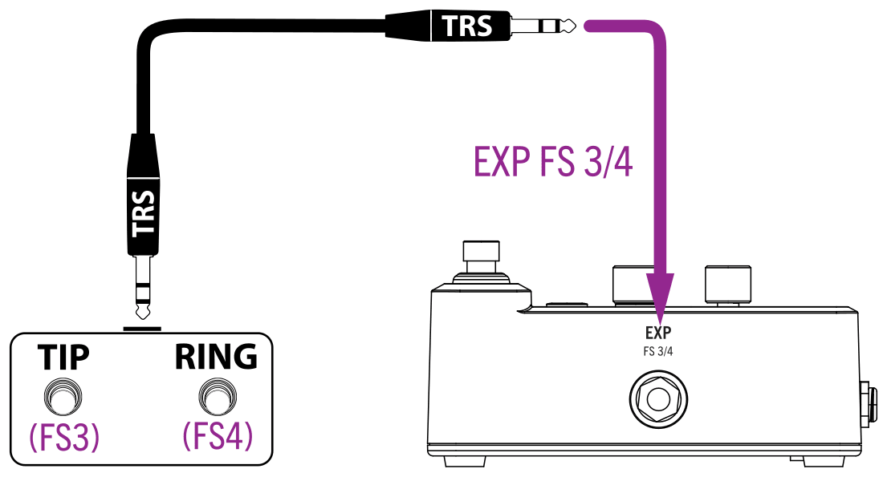
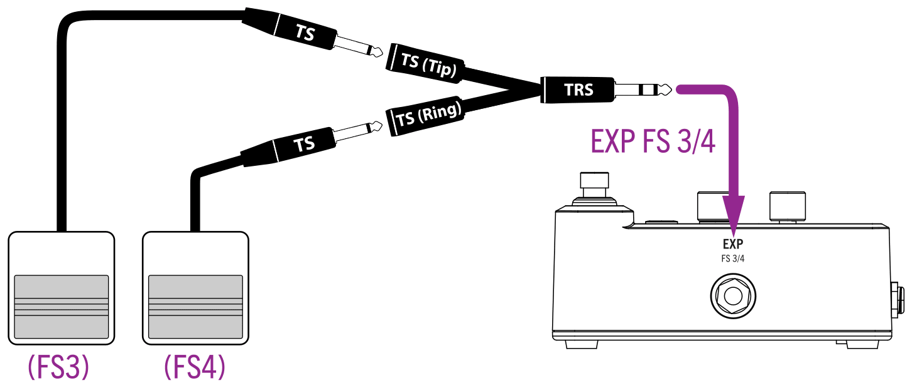
For either a dual-footswitch or a two individual footswitch type connection, you’ll need to configure the “Settings View” - Pedal Jack for the “FS3/4” setting for proper switch and device operation. Use the Settings View - FS3 Func and FS4 Func options to choose your preferred function for each footswitch: “TAP” for TAP tempo, “FLUX” for the FLUX feature, or “Prev”/“Next” for preset switching.
Creating Expression/FLUX Assignments
Once you have your pedal/footswitches configured and connected to HX One, it is time to put them to work! You’ll see that many factory presets already include an effect parameter that is pre-assigned to Expression/FLUX.* Use the following steps to customize what your pedal or FLUX Mode switch will perform for each preset.
*TIP: By default, all Wah, Pitch Wham, and Poly Wham models are automatically configured with their Position parameter assigned for Expression/FLUX.
To create an Expression/FLUX assignment:
Press and hold the parameter’s Knob for 1 second.
Once assigned, you’ll see the Min/Max indicator “nodes” appear, as shown on the Simple Delay - Mix parameter bar in the illustration below.
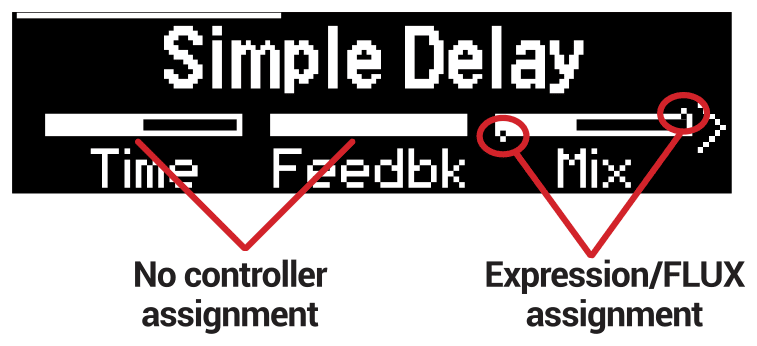
Your connected expression pedal and FLUX switch will now work to control this parameter—just try rocking the pedal or toggling the FLUX switch! Read on to see how to customize things further.
To remove an existing Expression/Flux assignment from a parameter, press and hold its Knob for 1 second—you’ll see the Min/Max indicators cleared.
To customize the Min and Max values:
Press and hold the TAP | FLUX switch to enter FLUX Mode (the switch’s LED changes to white when in FLUX Mode).
To adjust the assignment’s Min value - press-release the FLUX switch so that its LED is dim white.
Turn the parameter’s Knob—you’ll see the Min. node move to indicate your new value. (If you have multiple assigned parameters, adjust the Min value for each.)
To adjust the assignment’s Max value - press-release the FLUX switch so that its LED is bright white.
Turn the parameter’s Knob—you’ll see the Max. node move to indicate your new value. (If you have multiple assigned parameters, adjust the Max. value for each.)
TIP: You can “reverse” the expression/FLUX Min and Max direction by adjusting the Min value higher than the Max value!
Move the expression pedal back and forth (or press FLUX several times slowly) to hear your assigned parameter(s) in action!
You’ll see the FLUX indicator line across the top of the Display move back and forth to show the Min - Max movement in real-time. You’ll also see the FLUX LED change incrementally from dim to bright white to indicate the Min - Max movement.
To customize the control options for the assigned parameter, use the model’s FLUX parameters.
Use the PAGE button to go to the last two pages of the Home View to access the following FLUX parameters.
FLUX Parameter Values/Range Default Description OnTime 0.0 ms ~ 8.0 sec
1/64 Trip ~ 32 Beats*1.000 s Sets the duration of time it will take for the parameter to automatically ramp from the Min to the Max value.
Press the knob to toggle between ms and note values.OnCurv Slow 5, Slow 4, Slow 3, Slow 2, Slow 1, Linear, Fast 1, Fast 2, Fast 3, Fast 4, Fast 5 Linear Sets the audible slope of the ramp from Min to Max. The graphic shown on the screen also illustrates the setting. OffTime 0.0 ms ~ 8.0 sec
1/64 Trip ~ 32 Beats*1.000 s Sets the duration of time it will take for the parameter to automatically ramp from the Max to the Min value.
Press the knob to toggle between ms and note division values.OffCurv Slow 5, Slow 4, Slow 3, Slow 2, Slow 1, Linear, Fast 1, Fast 2, Fast 3, Fast 4, Fast 5 Linear Sets the audible slope of the ramp from Min to Max. The graphic shown on the screen also illustrates the setting. *TIP: When OnTime or OffTime are set to note division values, a “Beat” is the equivalent of a 1/4 note duration (i.e., “4 Beats” = a whole note, “8 Beats” = two whole notes, etc.).
Be sure to SAVE your preset to retain your Expression/Flux assignments and customized settings!
If you change to a different model or preset before saving, all settings will be discarded.
TIP: You can also configure an effect model’s Expression/FLUX default assignment and parameters. Press both the ‹ and › PAGE buttons, and select User to set your customized settings as the defaults every time the model is loaded—see “Saving a Model’s User Default Settings”.
Tips for Creative Controller Assignment
- The FLUX “OnTime” and “OffTime” can be set to 0 ms (the default) for instant toggling between Min and Max—useful for something such as toggling a Distortion’s Level for a solo boost.
- Set the FLUX “OnTime” and “OffTime” to longer durations for dramatic ramping effects, such as changing the speed of a modulation effect or the sweep of a filter.
- Press an effect’s “OnTime” and “OffTime” knob to toggle it between ms value versus a note division value—when in note division value, the parameter’s timing syncs to your current TAP tempo.
- Pressing the FLUX switch before the parameter completes its Min-Max ramp immediately reverses the direction.
- For extreme psychedelic dub delay squeals, create Expression/FLUX assignments to both increase a Delay’s Feedback and decrease its Time to maximum values.
- You can also create Expression/FLUX assignments to Looper parameters, allowing you to control your loop playback & overdub volumes, high & low cut, and all kinds of interesting parameters for the Shuffling Looper.
Settings View
The Settings View offers numerous “Per Preset” and “Global” options to allow you to configure the operation of your HX One device for your own setup and preferences. Please reference the “Settings View Options” table in this chapter to see parameter descriptions.
To access the Settings View:
Press and hold the EFFECT knob for 1 second to display the Settings View.
Use the ‹ or › PAGE buttons to access the several pages of Settings, using Knobs 1-3 to edit the desired parameters on each page.
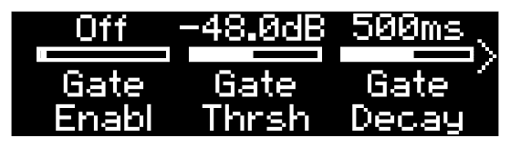
Press HOME to exit the Settings menu.
Restoring Global Settings
As noted in the following Settings View Options table, many of the options are “Global” and include factory defaults. Resetting the HX One’s Global Settings returns them all to their factory default values. Note that performing this reset does not affect the Settings View’s “Per Preset” values you may have edited, nor any of your presets.
If not already there, press and hold the EFFECT knob to enter the Settings View.
Press and hold both the ‹ and › PAGE buttons for one second.
Press Knob 3 (OK) to perform the Restore, or press Knob 1 (Cancel) to exit the screen without performing a restore.
Setting Proper Levels
The various inputs and outputs should be set to match that of your instrument, amp, and other pedals to ensure an ideal tone, low noise, and no ugly clipping distortion (unless, of course, you want ugly clipping distortion—who are we to judge?).
Within the Settings View screen, go to page 3 where you’ll find the Input Level and Output Level parameters.
Using Knobs 1-3, set levels according to the following table:
Parameter What are you connecting? Then do this: Input Level Guitar or bass with passive pickups* Set to “Instrument” Guitar or bass with really loud or active pickups Set either “Instrument” or “Line” (trust your ears) Keyboard, synth, or drum machine Set “Line” Output Level To the instrument input on a guitar or bass amp Set to “Instrument” To the guitar input(s) of a stompbox or other multi-effect To the instrument-level effects return of a guitar or bass amp for post effects or 4-cable method To the inputs of a studio rack effect or mixer Set to “Line”
*TIP: You can also experiment with the “Input Z” parameter on page 2 of the “Settings View” to set the impedance per preset, which can change the tone and “feel” of your instrument or optimize the input for a particular effect model.
Settings View Options
| Page | Knob | Parameter | Values | Default | Applied | Description |
|---|---|---|---|---|---|---|
| 1 | 1 | Input Gate | Off, On | Off | Per Preset | Choose to set the HX One Input Gate bypassed or enabled for the current preset. |
| 2 | Gate Threshold | -96.0dB~0.0dB | –48.0dB | Set the input level at which the Gate acts on your input signal. If your input gets cut off too abruptly, turn the Threshold up. | ||
| 3 | Gate Decay | 10ms~1.000 sec. | 500ms | Set how abruptly the Gate is applied to reduce low level noise once the signal drops below the threshold level. | ||
| 2 | 1 | Input Z | Auto, 10kΩ, 22kΩ, 32kΩ, 70kΩ, 90kΩ, 136kΩ, 230kΩ, 1MΩ | Auto | Per Preset | HX One includes an impedance circuit on its Left and Right inputs that affects tone and feel by loading your guitar’s pickups as they would by an effect pedal or amplifier. Choose a lower value to apply some high frequency attenuation, lower gain, and an overall “softer” feel. Choose a higher value for full frequency response, higher gain, and an overall “tighter” feel. Choose the “Auto” option to allow the impedance to match the input impedance of the currently loaded effect model. |
| 2 | I/O Config | Stereo, Insert | Stereo | Global | Set the preferred stereo or mono configuration for HX One: Choose “Stereo” for discrete left & right stereo signal paths when connecting to both IN and both OUT jacks. Note that if no cable is connected to the OUT - RIGHT jack while the “Stereo” option is selected, your HX One output is folded to mono. Choose “Insert” to utilize the OUT - RIGHT as a Send output and IN - RIGHT as a Return input for a mono effects loop. When Insert is selected, the following Knob 3 - “Insert Position” option can be used to position the HX One effect model in relation to HX One’s effects loop. Also, see “Setup Examples”. | |
| 3 | Insert Position | Pre/Post | Pre* | Per Preset | *NOTE: This option is only available when the preceding Knob 2 - “I/O Config” is set to “Insert.” Choose whether you want the HX One effects loop positioned before (“Pre”) or after (“Post”) the current HX One effect model’s processing. | |
| 3 | 1 | In Level | Instrument, Line | Inst | Global | Set the HX One Inputs for accepting Instrument level (typically best for electric guitar/bass) or Line level (for keyboard, drum machine, etc.) See “Setting Proper Levels”. |
| 2 | Out Level | Instrument, Line | Inst | Set whether the HX One Outputs signal levels are Instrument (-10dB, best for connecting to the input of another pedal or amplifier) or Line (+4dB, preferable for connecting to the input of outboard gear). See “Setting Proper Levels”. | ||
| 3 | Bypass Type | True, DSP | DSP | Select the preferred type of Bypass for HX One: For “True” bypass, your input signal continues to be sent directly through HX One with no A/D/A conversion, and all DSP is bypassed. For “DSP” buffered bypass, your input is sent through the DSP path along with delay/reverb trails, but any further effect processing is bypassed. Any current sustaining delay repeats or reverb tails are allowed to decay naturally. NOTE: If you’ve set the I/O Config to “Insert,” you’ll need to set the Bypass Type to “DSP” to allow your signal to continue to be fed through HX One’s Send and Return jacks when the device is bypassed. | ||
| 4 | 1 | Screen Bright | 1 ~ 10 | 10 | Global | Set the brightness of the OLED display, with 10 being the brightest setting. |
| 2 | Auto Dim | 30 sec, 1 min, 2 min, 5 min, 10 min, 20 min | 20 min | Configure the display to automatically dim its brightness approximately 50% after the selected time. Turning a knob or pressing a switch or button resets the timer. | ||
| 3 | TAP Flash | Off, On | On | If you’d prefer to not see the red TAP footswitch LED constantly flashing, you can turn it off. | ||
| 5 | 1 | Preset Select | Instant, Load | Instant | Global | Set to determine whether the preset instantly loads while scrolling the Preset List (Instant) or loads when exiting the Preset Mode by pressing both the ON and TAP footswitches, HOME button, or EFFECT knob (Load). The “Load” option allows you to effectively “queue” a new effect without having to hear all the presets between the current and target preset. In this case, the queued preset flashes until the selection is engaged. |
| 2 | Preset Min | 0–126 | 0 | Set these Min and Max values to specify the range of presets accessible when pressing Preset Mode - Next/Prev preset switches. For example, if Preset Min is “9” and Preset Max is “12,” pressing Next repeatedly will cycle 9, 10, 11, 12, 9, 10, 11, 12, 9, etc. All 128 presets are still selectable via the EFFECTS knob; when a preset outside of the selected range is active, pressing Next/Prev will still increment/decrement normally, but once inside the selected range, they will cycle as configured. | ||
| 3 | Preset Max | 1–127 | 127 | |||
| 6 | 1 | Pedal Jack | ExpFS4, FS3/4 | ExpFS4 | Global | Configure the device’s EXP FS 3/4 jack to accommodate either a single expression pedal or expression pedal + single footswitch (ExpFS4), or two footswitches (FS3/4). See “Connecting an Expression Pedal and Footswitches”. |
| 2 | FS3 Function (Tip) | TAP, FLUX, Previous | Prev* | *NOTE: This parameter is only configurable if the preceding Pedal Jack parameter is set to “FS3/4.” Choose the function of your connected FS3 switch as a TAP tempo switch (“TAP”), to trigger EXP-assigned parameters with the FLUX feature (“FLUX”), or to load the previous preset (“Prev”). | ||
| 3 | FS4 Function (Ring) | TAP, FLUX, Next | Next | Choose the function of your connected FS4 switch as a TAP tempo switch (“TAP”), to trigger EXP-assigned parameters with the FLUX feature (“FLUX”), or to load the next preset (“Next”). | ||
| 7 | 1 | Pedal Polarity | Normal, Invert | Normal | Global | If your external expression pedal appears to work backward—for example, when controlling a Wah the treble boost occurs at heel down rather than toe down—set this polarity to “Invert” to reverse the pedal’s behavior. |
| 2 | ExpFlx Position | Preset, Global | Preset | Set to determine whether the Expression Pedal/Flux position is set per preset or globally. If you want an Exp/Flux-assigned parameter to maintain its position when switching presets, set this to “Global.” | ||
| 3 | Tempo Pitch | Authentic, Transparent | Auth | Set to determine whether pressing TAP (or changes in incoming MIDI clock) while a synced Delay is selected causes accurate pitch artifacts to be heard (Auth), such as old tape delay units are known for, or minimizes these artifacts (Trans). | ||
| 8 | 1 | MIDI Channel | 1~16, Omni | 1 | Global | Select the MIDI Channel on which HX One receives MIDI messages. |
| 2 | MIDI Thru | Off, On | On | When On, MIDI OUT acts as a MIDI THRU; that is, it passes through any MIDI messages received at the MIDI IN jack or USB MIDI IN. NOTE: Incoming MIDI Clock is always routed to MIDI OUT/THRU and USB MIDI OUT, regardless of this MIDI THRU On/Off setting. | ||
| 3 | MIDI PC Rx | Off, On | On | Set to determine whether HX One will respond to MIDI Program Change 000 to 127 messages (for preset changes) received via MIDI IN or USB. | ||
| 9 | 1 | Rx MIDI Clock | Off, On, Auto | Auto | Global | Choose if HX One receives and syncs to MIDI Clock messages received via MIDI IN or USB—see “Using MIDI Clock for Tempo Sync”. When “Off,” HX One uses only its internal TAP tempo and ignores any incoming MIDI Clock messages. Note that incoming MIDI Clock is still routed to MIDI THRU. When “On,” HX One automatically syncs to incoming MIDI Clock. MIDI Clock sync is unaffected by HX One TAP switch, MIDI CC93, or preset changes. When set to “Auto,” HX One automatically syncs to incoming MIDI Clock Tempo, and you can optionally enter your own tempo via the TAP switch or MIDI CC 93. When synced to MIDI Clock, the Clock sync is unaffected by HX One preset changes. |
| 2 | Tempo | Preset, Global, MIDI* | Global | Choose whether your TAP tempo is applied (and saved & recalled) with the current preset or globally. *NOTE: “MIDI” is not manually selectable but is automatically enabled when using the Rx MIDI Clock - “On” or “Auto” settings and syncing to MIDI Clock. | ||
| 3 | BPM | 20.0~240.0 External | 120.0 | Global* | Choose the TAP tempo rate to which Delay - Time and Modulation - Speed/Rate can sync. When HX One is synced to incoming MIDI Clock, you’ll see the TAP LED flashing blue rather than red to indicate the Clock tempo. *NOTE: The BPM’s “Per Preset” vs. “Global” behavior is determined by the preceding Tempo setting. When the Tempo - “MIDI” setting is displayed, the BPM value indicates the current MIDI Clock BPM value to which HX One is synced. | |
| 10 | 1 | Tuner Reference | 425Hz~455Hz | 440Hz | Global | If you prefer to calibrate the tuner to reference pitch other than the standard 440Hz, you can change it with this setting. (And no, we’re not taking sides in the 432Hz vs. 440Hz debate!) |
| 2 | Tuner Audio | Mute, Dry, Effect | Mute | Choose what is heard from HX One’s Outputs when the Tuner is engaged. “Mute” - all output is muted. | ||
| 3 | Tuner ♭/♯ | ♭ (flat), ♯ (sharp) | ♭ (flat) | Choose whether the note display indicates pitches expressed as “♭ (flat)” or “♯ (sharp).” | ||
| 11 | 1 | Display Name | Auto, Model | Auto | Global | Choose what information is displayed in the Home View screen. “Auto” - Displays the preset name by default. When scrolling through models using the Effect encoder, the current model’s name is displayed and persists for 3 seconds after the last turn, and then returns to the preset name. When editing model parameters, the preset name is briefly replaced by the current model’s name and persists for 3 seconds after the last edit before returning to the preset name. “Model” - Always displays the current model’s name. |
MIDI
HX One receives MIDI messages via its 5-pin MIDI In, as well as via USB, providing functionality with most popular MIDI hardware or software controllers for control of HX One’s preset changes, effect parameters, Looper, and MIDI Clock tempo sync. USB MIDI operation is functional with Mac & Windows computers. The following sections and tables provide the details for MIDI functionality.
- Connect the MIDI output of your external MIDI controller device to the HX One MIDI IN, and HX One will respond to MIDI Program Change (PC), Note On, MIDI CC, and MIDI Clock messages, as covered within this chapter.
- When connected to your computer, HX One also receives and responds to the same MIDI messages via your computer USB connection.
- Connect HX One’s MIDI OUT/THRU to your other MIDI gear (or connect USB to your computer) to pass incoming MIDI control messages “THRU” to another device or computer app.*
- HX One does not transmit MIDI for any of its own actions, but will pass incoming MIDI control and MIDI Clock out via its MIDI OUT/THRU and USB MIDI ports.
*NOTE: MIDI THRU is On by default. To disable it, configure the “Settings View” - MIDI THRU Off.
MIDI Clock messages received by HX One are always routed out the MIDI THRU 5-pin and USB MIDI, regardless if the “Settings View” - MIDI Thru option is On or Off.
- All MIDI control is global, meaning, all commands listed in this chapter will control their respective HX One functions regardless of the currently loaded preset.
NOTE: HX One uses MIDI Channel 1 as the factory default, but this can be changed via the “Settings View” - MIDI Channel option.
Preset Recall via MIDI Program Change
NOTE: HX One is configured by default to receive Program Change type messages. You can change the “Settings View” - MIDI PC Rx to “Off” to ignore incoming PC messages:
To recall a preset, send a MIDI Program Change (PC) message to your HX One device.
PC: 000 thru 127 will load HX One presets 000 thru 127, respectively. (Bank messages are ignored by HX One.)
Using MIDI Clock for Tempo Sync
HX One can receive MIDI Clock via its MIDI IN, as well as via USB MIDI, to allow you to sync your time-based effects to the tempo from other effects devices and computer applications. Use the “Settings View” - Rx MIDI Clock option to set the desired MIDI Clock functionality:
NOTE: To allow Delay and Modulation models to follow the synced MIDI Clock Tempo, you must press the knob for the model’s Time, Speed, or Rate parameter to set it to Tempo Sync mode and select the desired note division (1/4, 1/8 Dot, 1/2 Triplet, etc.).
Off - HX One does not sync to incoming MIDI Clock (but Clock messages are still passed to MIDI THRU, regardless). The TAP Tempo can be set manually via the TAP footswitch, remotely via MIDI CC 93, or using the Settings > BPM control.
- The TAP Footswitch LED flashes red in 1/4 note division of the current Preset or Global BPM setting.
On - HX One syncs its tempo globally to incoming MIDI Clock Tempo and responds to Clock Start and Stop messages. With the On setting, only MIDI Clock Tempo is utilized.
- While receiving MIDI Clock Tempo, the TAP Footswitch LED flashes blue in 1/4 note division of the current MIDI Clock BPM. The Settings > BPM parameter displays the received Clock Tempo value.
- MIDI Clock Tempo sync is unaffected by HX One TAP switch, MIDI CC 93, or preset changes.
- When the incoming MIDI Clock Tempo is stopped, HX One continues using the last Clock Tempo BPM that was received. The TAP footswitch LED then becomes dimly lit and does not flash. The Settings > BPM parameter continues to display the Tempo value in use.
- When Rx MIDI Clock is set to On, the Settings > Tempo Source parameter is fixed at the MIDI setting.
Auto - (The default setting) HX One automatically syncs its tempo globally to incoming MIDI Clock Tempo and responds to Clock Start and Stop messages. While set to Auto, the TAP Tempo can alternatively be set manually via the TAP switch or MIDI CC 93.
- While synced to MIDI Clock Tempo, the TAP Footswitch LED flashes blue in 1/4 note division of the current MIDI Clock BPM.
- MIDI Clock Tempo sync is unaffected by HX One preset changes.
- When the incoming MIDI Clock Tempo is stopped, HX One continues using the last Clock Tempo BPM that was received. The TAP footswitch LED then becomes dimly lit blue and does not flash. The Settings > BPM parameter continues to display the Tempo value in use.
- When a tempo is entered manually (via the TAP switch or MIDI CC 93), HX One reverts to using its internal Preset or Global Tap tempo (following the current Settings > Tempo Source > Preset or Global setting). The TAP footswitch flashes red in a 1/4 note division of the current Preset or Global BPM setting.
Once you’ve configured Rx MIDI Clock for the preferred Auto or On setting as described above, use the following steps to sync HX One to your source MIDI Clock device’s tempo.
Connect your source MIDI Clock device’s MIDI OUT to HX One’s MIDI IN port. Or, USB-connect HX One to your computer and select the HX One USB MIDI port within your MIDI/DAW software.
On the source device or software, set the desired tempo rate and start the MIDI Clock send.
Once HX One receives the MIDI Clock “Start” command, you’ll see HX One’s TAP LED change to flashing blue to indicate it is actively following the received MIDI Clock tempo rate.
TIP: When synced to MIDI Clock, press the Settings > BPM knob to change between three different Clock BPM display modes: whole (e.g. “120”), decimal (e.g., “120.3”), or “Extrn.”
NOTE: The Looper’s loop playback does not sync to tempo and, therefore, does not sync to MIDI Clock.
Controlling HX One Parameters via MIDI
HX One has numerous functions all pre-configured for specific, global MIDI CC commands, as listed in the following tables.
Exp Pedal & Footswitch Emulation - MIDI CC
| CC | Value | Pedal/Footswitch/Knob Function |
|---|---|---|
| 0 | -- | Reserved |
| 1 | 0-127 | Emulates ON switch. If effect is off, any CC1 value will turn it on; if effect is on, any CC1 value will turn it off. Provided primarily for use with MIDI footswitches. (Looper models do not respond to this message.) |
| 2 | 0-127 | Emulates FLUX switch (note that TAP Tempo uses CC93). HX One does not need to be in FLUX Mode. |
| 3 | 0-127 | Emulates Expression Pedal (when Settings > Pedal Jack is set to “ExpFS4”) |
| 4 | 0-63: Bypass; 64-127: Engage | Bypass/Engage (independent of CC1, which toggles the effect on and off, regardless of current bypass state). Provided primarily for use with MIDI knobs, where moving them past 12:00 will turn the effect on/off. (Looper models do not respond to this message.) |
| 5 | 0-2 | Provides remote control of HX One’s Views: 0: Home 1: Preset List 2: Tuner |
| 93 | 0-127 | Enters Tap Tempo |
Effect Parameter Control - MIDI CC
| CC | Value | Parameter |
|---|---|---|
| 21 | 0-127 | Parameter 1 |
| 22 | 0-127 | Parameter 2 |
| 23 | 0-127 | Parameter 3 |
| 24 | 0-127 | Parameter 4 |
| 25 | 0-127 | Parameter 5 |
| 26 | 0-127 | Parameter 6 |
| 27 | 0-127 | Parameter 7 |
| 28 | 0-127 | Parameter 8 |
| 29 | 0-127 | Parameter 9 |
| 30 | 0-127 | Parameter 10 |
| 31 | 0-127 | Parameter 11 |
| 32 | -- | Reserved |
| 33 | 0-127 | Parameter 12 |
| 34 | 0-127 | Parameter 13 |
| 35 | 0-127 | Parameter 14 |
| 36 | 0-127 | Parameter 15 |
| 37 | 0-127 | Parameter 16 |
| 38 | 0-127 | Parameter 17 |
| 39 | 0-127 | Parameter 18 |
| 40 | 0-127 | Parameter 19 |
| 41 | 0-127 | Parameter 20 |
| 42 | 0-127 | Parameter 21 |
| 43 | 0-127 | Parameter 22 |
| 44 | 0-127 | Parameter 23 |
| 45 | 0-127 | Parameter 24 |
| 46 | 0-127 | FLUX - OnTime |
| 47 | 0-10 | FLUX - OnCurve 0~4: Slow 5 to Slow 1 5: Linear 6~10: Fast 1 to Fast 5 |
| 48 | 0-127 | FLUX > OffTime |
| 49 | 0-10 | FLUX - OffCurve: 0~4: Slow 5 to Slow 1 5: Linear 6~10: Fast 1 to Fast 5 |
| 72 | 0-63; 64-127 | Load Next Preset Load Previous Preset |
Effect Parameter Control - MIDI Note On
| Message | Parameter |
|---|---|
| Note C [0] | Toggles Bypass/Enable—Each subsequent press of the key is like pressing the ON switch, bypassing or enabling the current effect model. (Looper models do not respond to this message.) |
| Note C# [0] | Enters TAP Tempo—Repeated presses of the key are like presses of the TAP switch, setting the TAP tempo value |
| Note D [0] | Engages FLUX—Each subsequent press of the key is like pressing the FLUX switch, triggering the FLUX feature |
NOTE: Line 6 follows Yamaha’s MIDI note spec, where middle C is “C3” (unlike some other gear manufacturers that prefer to say middle C is “C4”).
Controlling the Looper via MIDI
With the use of either MIDI CC or MIDI Note On messages, you can control numerous aspects of the HX One Simple or Shuffling Looper. Be sure to read through the Looper sections on page 19 to get familiar with all functions, then try sending the following MIDI messages to HX One for your looping performance.
Looper Control - MIDI CC Messages
| CC | Value | Looper Function |
|---|---|---|
| 60 | 0-63: Overdub* 64-127: Record | Overdub is enabled only if device is currently playing or recording a loop Record is enabled only if no loop exists in memory or if playback or recording is stopped |
| 61 | 0-63: Stop; 64-127: Play | Play/Stop |
| 62 | 64-127* | Play Once (note that values 0-63 do nothing) |
| 63 | 64-127* | Toggle on each press between Undo and Redo for the most recent overdub recording (note that values 0-63 do nothing) |
| 65 | 0-63: Forward* 64-127: Reverse* | Forward/Reverse |
| 66 | 0-63: Full*; 64-127: Half* | Full Speed/Half Speed |
*NOTE: These MIDI control messages are functional only for the Mono and Stereo Simple Looper. (Shuffling Looper offers only Record, Play, and Stop.)
Looper Control - MIDI Note On Messages
| Message | Looper Function |
|---|---|
| Note C [-1] | Toggles on each press between Record > Play > Overdub* (Note that Record is only initiated if no loop is currently in memory) |
| Note D [-1] | Toggles on each press between Play and Stop |
| Note E [1] | Play Once* |
| Note F [-1] | Record - note that this will clear the current loop, if one exists, and record a new loop |
| Note F# [-1] | Toggles on each press between Undo and Redo, for overdub recordings* |
| Note G [-1] | Overdub* |
| Note G# [-1] | Toggles on each press between Forward and Reverse* |
| Note A [-1] | Play |
| Note A# [-1] | Toggles on each press between Half Speed and Full Speed* |
| Note B [-1] | Stop |
NOTE: Line 6 follows Yamaha’s MIDI note spec, where middle C is “C3” (unlike some other gear manufacturers that prefer to say middle C is “C4”).
*NOTE: These MIDI control messages are functional only for the Mono and Stereo Simple Looper. (Shuffling Looper offers only Record, Play, and Stop.)
Cheat Sheet
Top Panel
- Display
- Press ⌂ to display the Home/Edit View
- Use KNOBS 1-3 to adjust the parameters
- Knobs 1 – 3
- Turn to adjust parameters for the current effect
- Press to reset value
- Press to toggle between Hz or ms and note values
- Press and hold to assign that parameter to FLUX/Expression control
- Effect
- Turn to select an effect
- Press and turn to select a different effect category...
- Press to open the Effect list...
- Turn to choose your effect from the category’s Effect list
- Optionally, press ‹ PAGE to choose a different category
- Press and hold to enter the Settings Menu
- ‹ Page ›
- Press to see more parameters for the selected effect or to navigate the Effect list
- Home / Save
- Press from any screen to return to the Home View
- Press and hold to enter the Preset Save View
- On Switch
- Press to toggle current effect enabled or bypassed. The ON LED lights when enabled
- Tap | Flux Switch
- Tap to set a tempo for time-based effects to follow
- Press & hold to toggle between TAP (red) and FLUX (white). See the Owner’s Manual
- Preset List
- Press and release both the ON and TAP switches to display the Preset List
- Press ON ⌃ or TAP ⌄ to select a preset
Connections
- IN
- Connect your instrument here. Use both jacks for stereo or the L/MONO for mono input
- OUT
- Connect to the input of your amplifier or other pedals. Use both jacks for stereo or the L/MONO for mono output
- Power
- Connect the included AC adapter here to power on HX® One
- USB
- Connect to your computer for device firmware updates
- MIDI IN, OUT/THRU
- HX One responds to MIDI commands for external parameter control, preset changes, and MIDI Clock
- EXP - FS 3/4
- Connect an expression pedal or dual footswitch for additional control
- Setups
- Front of Amp Setup · 4-Cable Method Setup
Full Owner’s Manual Available at https://line6.com/manuals